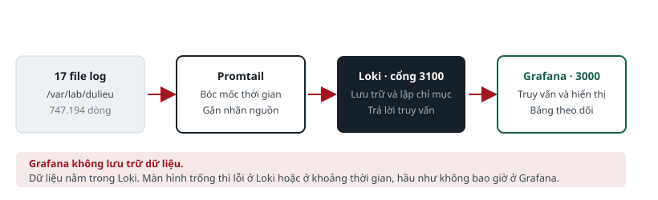
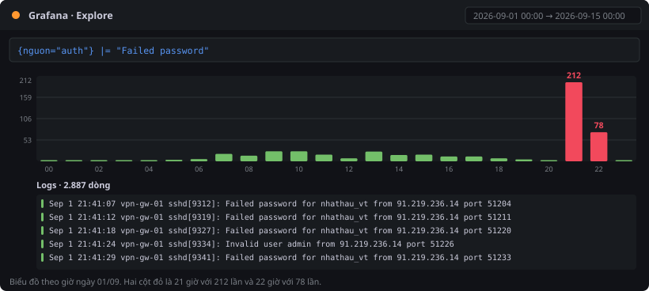
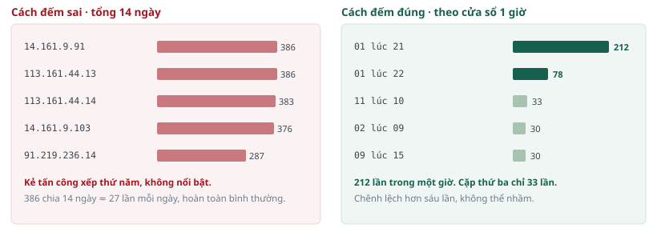
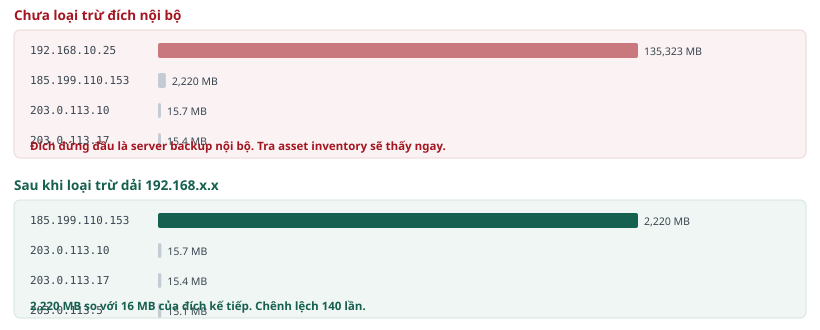
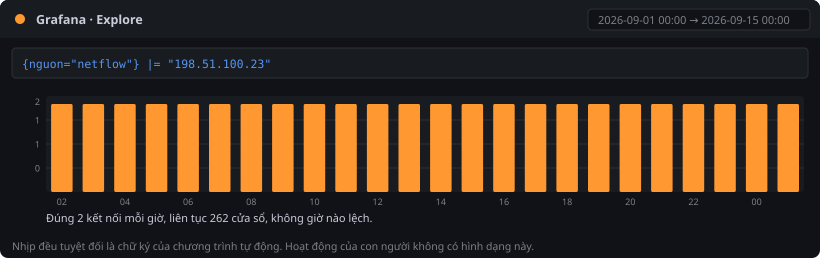
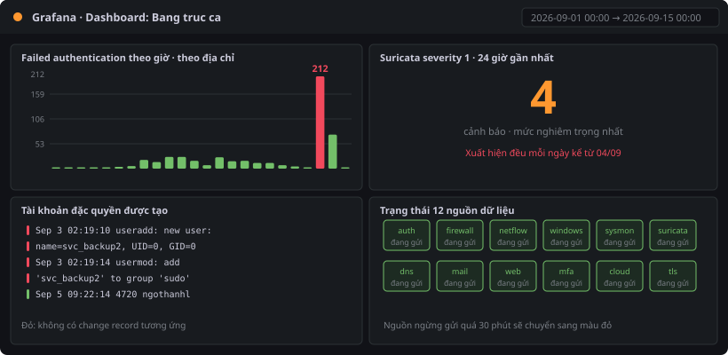

PHẦN G · THỰC HÀNH VỚI GRAFANA#
Cài đặt, sử dụng và sáu bài theo tình huống
- Cài Loki và Grafana lên Ubuntu
- Nạp bộ dữ liệu và kiểm chứng
- Làm quen giao diện Grafana
- Sáu bài thực hành theo tình huống
- Dựng dashboard hoàn chỉnh
PHẦN G · GRAFANA
Chương 20 · Cài Loki và Grafana lên Ubuntu#
Trong ảnh máy ảo đã cài sẵn. Chương này dùng khi cần cài lại, hoặc khi bạn muốn tự dựng ở đơn vị.
20.1. Một điểm cần hiểu rõ trước khi cài#
Nhiều người nghĩ rằng dữ liệu được đẩy thẳng vào Grafana. Điều đó không đúng, và hiểu sai chỗ này sẽ gây lúng túng khi có sự cố.
GHI NHỚ
Grafana không lưu trữ dữ liệu log. Grafana chỉ là giao diện hiển thị. Dữ liệu log được lưu trong Loki. Khi bạn gõ một truy vấn trên Grafana, Grafana gửi truy vấn đó sang Loki, Loki tìm và trả kết quả về, Grafana vẽ ra màn hình. Nếu màn hình trống, nguyên nhân nằm ở Loki hoặc ở khoảng thời gian, hầu như không bao giờ nằm ở Grafana.
| Thành phần | Cổng | Việc nó làm |
|---|---|---|
| Promtail | không có | Đọc từng dòng trong file log, bóc mốc thời gian, gắn nhãn, rồi đẩy sang Loki. Chạy một lần khi nạp dữ liệu |
| Loki | 3100 | Nhận dữ liệu, lưu trữ, lập chỉ mục theo nhãn, và trả lời truy vấn. Đây là nơi dữ liệu thật sự nằm |
| Grafana | 3000 | Giao diện web để gõ truy vấn, xem kết quả và dựng dashboard. Không lưu dữ liệu log |

20.2. Bước 1 — Cài Loki và Promtail#
Bước 1
# Chuẩn bị
sudo apt update
sudo apt install -y unzip curl wget jq
# Tải hai thành phần
cd /tmp
curl -sLO https://github.com/grafana/loki/releases/download/v3.1.0/loki-linux-amd64.zip
curl -sLO https://github.com/grafana/loki/releases/download/v3.1.0/promtail-linux-amd64.zip
unzip -q loki-linux-amd64.zip
unzip -q promtail-linux-amd64.zip
# Đưa vào folder chương trình hệ thống
sudo mv loki-linux-amd64 /usr/local/bin/loki
sudo mv promtail-linux-amd64 /usr/local/bin/promtail
sudo chmod +x /usr/local/bin/loki /usr/local/bin/promtail
# Kiểm tra đã cài được
loki --version
promtail --version
20.3. Bước 2 — Cài Grafana#
Bước 2
# Thêm kho phần mềm chính thức của Grafana
sudo apt install -y apt-transport-https software-properties-common
sudo mkdir -p /etc/apt/keyrings
wget -q -O - https://apt.grafana.com/gpg.key \
| sudo gpg --dearmor -o /etc/apt/keyrings/grafana.gpg
echo "deb [signed-by=/etc/apt/keyrings/grafana.gpg] https://apt.grafana.com stable main" \
| sudo tee /etc/apt/sources.list.d/grafana.list
# Cài và khởi động
sudo apt update
sudo apt install -y grafana
sudo systemctl enable --now grafana-server
# Kiểm tra: phải trả về mã 200 hoặc 302
curl -s -o /dev/null -w "%{http_code}\n" http://localhost:3000
20.4. Bước 3 — Đặt hai file cấu hình#
Hai file cấu hình nằm trong gói dữ liệu, folder giamsat. Đây là bước quan trọng nhất, vì cấu hình mặc định của Loki không dùng được với bộ dữ liệu này.
Bước 3
sudo mkdir -p /etc/loki /etc/promtail
sudo mkdir -p /var/loki/chunks /var/loki/rules /var/lib/promtail
sudo cp /var/lab/giamsat/loki-config.yaml /etc/loki/
sudo cp /var/lab/giamsat/promtail-config.yaml /etc/promtail/
CẢNH BÁO
Tham số reject_old_samples trong file cấu hình Loki phải đặt là false. Mặc định Loki từ chối mọi bản ghi cũ hơn bảy ngày. Dữ liệu của bộ lab có mốc thời gian tháng 9 năm 2026, nên nếu giữ cấu hình mặc định thì toàn bộ dữ liệu sẽ bị từ chối và Loki không báo lỗi rõ ràng.
Phần pipeline_stages trong file cấu hình Promtail phải bóc đúng mốc thời gian từ trong mỗi dòng log. Nếu thiếu phần này, mọi bản ghi sẽ mang thời điểm bạn nạp dữ liệu thay vì thời điểm sự việc thật sự xảy ra, và mọi bài phân tích theo timeline sẽ sai.
20.5. Bước 4 — Tạo dịch vụ để tự khởi động#
Bước 4
# Dịch vụ Loki
sudo tee /etc/systemd/system/loki.service > /dev/null <<UNIT
[Unit]
Description=Loki log aggregation
After=network.target
[Service]
ExecStart=/usr/local/bin/loki -config.file=/etc/loki/loki-config.yaml
Restart=always
User=root
[Install]
WantedBy=multi-user.target
UNIT
# Dịch vụ Promtail
sudo tee /etc/systemd/system/promtail.service > /dev/null <<UNIT
[Unit]
Description=Promtail log shipper
After=loki.service
[Service]
ExecStart=/usr/local/bin/promtail -config.file=/etc/promtail/promtail-config.yaml
Restart=always
User=root
[Install]
WantedBy=multi-user.target
UNIT
# Nạp lại danh sách dịch vụ và bật Loki trước
sudo systemctl daemon-reload
sudo systemctl enable --now loki
sleep 10
# Kiểm tra Loki đã sẵn sàng rồi mới bật Promtail
curl -s http://localhost:3100/ready
# Kết quả đúng: ready
sudo systemctl enable --now promtail
LƯU Ý
Thứ tự quan trọng. Promtail phải khởi động sau Loki. Nếu bật cùng lúc, Promtail sẽ thử đẩy dữ liệu khi Loki chưa sẵn sàng và báo lỗi liên tục trong vài phút đầu.
PHẦN G · GRAFANA
Chương 21 · Nạp bộ dữ liệu và kiểm chứng#
Quá trình nạp mất từ ba đến sáu phút cho 747.194 dòng.
21.1. Nạp lại từ đầu#
Nạp dữ liệu
cd /var/lab/giamsat
sudo bash nap_dulieu.sh
# Script thực hiện năm bước:
# 1. Kiểm tra folder dữ liệu có đủ file
# 2. Dừng hai dịch vụ, xoá dữ liệu cũ và vị trí đọc cũ
# 3. Khởi động Loki, chờ đến khi sẵn sàng
# 4. Khởi động Promtail để bắt đầu nạp
# 5. In số dòng đã nạp mỗi 15 giây
# Khi con số không tăng nữa thì việc nạp đã xong.
# Bấm Ctrl và C để dừng phần theo dõi.
Nếu muốn nạp lại thủ công thay vì dùng script, ba lệnh sau là phần cốt lõi. Bước xoá file ghi vị trí đọc là bắt buộc, nếu không Promtail sẽ nghĩ rằng đã đọc hết và không nạp lại gì.
Cách thủ công
sudo systemctl stop promtail loki
sudo rm -rf /var/loki/chunks /var/loki/index_* /var/lib/promtail/positions.yaml
sudo mkdir -p /var/loki/chunks /var/loki/rules /var/lib/promtail
sudo systemctl start loki && sleep 10 && sudo systemctl start promtail
21.2. Ba lệnh kiểm chứng bắt buộc#
Kiểm chứng
# 1. Loki sẵn sàng
curl -s http://localhost:3100/ready
# Kết quả đúng: ready
# 2. Đủ mười hai nguồn dữ liệu
curl -s "http://localhost:3100/loki/api/v1/label/nguon/values" | jq -r ".data[]"
# Kết quả đúng: auth, cloud, dns, firewall, mail, mfa,
# netflow, suricata, sysmon, tls, web, windows
# 3. Mốc thời gian đã được bóc đúng, không phải thời điểm nạp
curl -sG "http://localhost:3100/loki/api/v1/query_range" \
--data-urlencode 'query={nguon="auth"}' \
--data-urlencode 'start=2026-09-01T00:00:00+07:00' \
--data-urlencode 'end=2026-09-15T00:00:00+07:00' \
--data-urlencode 'limit=1' | jq -r ".data.result | length"
# Kết quả đúng: 1 hoặc lớn hơn.
# Nếu ra 0 thì mốc thời gian đã bị ghi sai, phải nạp lại.
21.3. Bảng mười hai nguồn và nhãn kèm theo#
| Nhãn nguồn | File tương ứng | Nhãn phụ có sẵn | Dùng cho tình huống |
|---|---|---|---|
| auth | auth.log | may | TH-2, TH-3 |
| firewall | pfsense_filterlog.log | may | TH-4, TH-5 |
| netflow | netflow.csv | không có | TH-4, TH-5 |
| windows | windows_security.ndjson | may, ma_su_kien | TH-3, TH-6 |
| sysmon | sysmon.ndjson | may, ma_su_kien | TH-6 |
| suricata | suricata_eve.json | muc_do | TH-1, TH-5 |
| web | web_access.log | ma | TH-1 |
| dns | dns_query.log | may | TH-5 |
| mail.log | may | TH-6 |
PHẦN G · GRAFANA
Chương 22 · Làm quen giao diện Grafana#
Mười phút làm quen trước khi vào sáu bài tình huống.
22.1. Đăng nhập và thêm nguồn dữ liệu#
- Trên máy Kali, mở trình duyệt vào địa chỉ http://192.168.10.20:3000.
- Đăng nhập bằng tài khoản admin và mật khẩu LabMinhAn2026.
- Mở menu bên trái, chọn Kết nối, chọn Nguồn dữ liệu, chọn Thêm nguồn dữ liệu mới.
- Chọn Loki trong danh sách.
- Ở ô Địa chỉ, nhập http://localhost:3100.
- Kéo xuống cuối trang, chọn Lưu và kiểm tra. Phải hiện thông báo màu xanh là thành công.
LƯU Ý
Trong ảnh máy ảo, nguồn dữ liệu đã được thêm sẵn. Bạn chỉ cần làm lại các bước này nếu tự cài từ đầu.
22.2. Màn hình Khám phá#
Đây là màn hình bạn dùng nhiều nhất. Mở bằng cách chọn Khám phá ở menu bên trái.
| Thành phần trên màn hình | Chức năng |
|---|---|
| Ô chọn nguồn dữ liệu, góc trên bên trái | Chọn Loki. Nếu chọn nhầm nguồn khác thì mọi truy vấn đều báo lỗi |
| Ô chọn khoảng thời gian, góc trên bên phải | Đây là ô quan trọng nhất. Phải đặt đúng khoảng có dữ liệu |
| Ô nhập truy vấn, ở giữa | Nơi gõ truy vấn LogQL. Có hai chế độ: Trình dựng và Mã. Dùng chế độ Mã để gõ trực tiếp |
| Nút Chạy truy vấn, góc trên bên phải | Hoặc bấm tổ hợp phím Shift và Enter |
| Khu vực kết quả, phía dưới | Hiện biểu đồ số lượng theo thời gian ở trên, và danh sách dòng log ở dưới |
22.3. Bước bắt buộc trước mọi truy vấn#
CẢNH BÁO
Đặt khoảng thời gian thành 2026-09-01 00:00:00 đến 2026-09-15 00:00:00. Mặc định Grafana hiển thị sáu giờ gần nhất. Dữ liệu của bộ lab nằm ở tháng 9 năm 2026, nên nếu không đổi khoảng thời gian, màn hình sẽ trống và bạn sẽ tưởng việc nạp dữ liệu thất bại. Đây là lỗi phổ biến nhất khi mới bắt đầu.
- Bấm vào ô chọn khoảng thời gian ở góc trên bên phải.
- Chọn thẻ Khoảng tuyệt đối.
- Ô Từ nhập: 2026-09-01 00:00:00
- Ô Đến nhập: 2026-09-15 00:00:00
- Bấm Áp dụng khoảng thời gian.

22.4. Truy vấn đầu tiên#
Truy vấn đầu tiên
# Gõ vào ô truy vấn, ở chế độ Mã:
{nguon="auth"}
# Bấm Shift và Enter để chạy.
# Kết quả đúng: biểu đồ cột hiện lên ở trên,
# danh sách dòng log hiện ở dưới,
# dòng mới nhất có mốc ngày 14 tháng 9 năm 2026.
Nếu kết quả đúng như mô tả, môi trường của bạn đã sẵn sàng. Nếu trống, quay lại mục 22.3 kiểm tra khoảng thời gian, rồi kiểm tra ba lệnh ở mục 21.2.
PHẦN G · GRAFANA
Chương 23 · Sáu bài thực hành theo tình huống#
Mỗi bài bắt đầu bằng một tình huống thật, đặt ra câu hỏi phải trả lời, rồi hướng dẫn cách đi tới câu trả lời.
23.1. Cách làm sáu bài này#
Sáu bài được thiết kế theo trình tự tăng dần. Bài sau dùng kết quả của bài trước. Mỗi bài có cùng một cấu trúc sáu mục.
| Mục | Nội dung |
|---|---|
| Tình huống | Bối cảnh công việc dẫn tới việc bạn phải điều tra. Đọc kỹ, vì nó quy định phạm vi cần tìm |
| Câu hỏi phải trả lời | Từ hai đến bốn câu hỏi cụ thể. Đây là thứ bạn phải nộp lại |
| Mục tiêu kỹ năng | Kỹ năng bạn luyện trong bài này, để biết bài này dạy gì |
| Cách đi tới câu trả lời | Các bước, kèm truy vấn đầy đủ sao chép được |
| Kết quả mong đợi | Kết quả đúng, để bạn tự kiểm tra |
| Phiếu ghi nhận | Bảng trống để điền và nộp lại |
CẢNH BÁO
Trước mỗi bài, kiểm tra lại khoảng thời gian trên Grafana đang là 2026-09-01 đến 2026-09-15. Khoảng thời gian bị đổi trong lúc làm bài là nguyên nhân của phần lớn kết quả sai.
23.2. Tình huống 1 — Ca trực sáng thứ Hai#
TÌNH HUỐNG
Bạn là chuyên viên giám sát an ninh của Công ty Minh An. Sáng thứ Hai ngày 15 tháng 9 năm 2026, bạn nhận ca trực. Người trực ca trước bàn giao lại một câu ngắn gọn: cuối tuần hệ thống có vẻ yên, nhưng tôi chưa kịp xem hết.
Cấp trên yêu cầu bạn nộp một bản tóm tắt tình hình hai tuần qua trong vòng ba mươi phút, trước cuộc họp lúc chín giờ.
| Câu hỏi phải trả lời | Mục tiêu kỹ năng |
|---|---|
| Trong hai tuần qua, nguồn log nào sinh ra nhiều bản ghi nhất, và con số là bao nhiêu? | Làm quen cú pháp chọn nhãn và hàm đếm theo thời gian |
| Có bao nhiêu cảnh báo phát hiện xâm nhập ở mức nghiêm trọng nhất? Chúng xuất hiện vào những ngày nào? | Lọc theo nhãn phụ và đọc biểu đồ theo thời gian |
| Ngày nào trong hai tuần có nhiều hoạt động bất thường nhất? Căn cứ vào đâu? | Đọc hình dạng biểu đồ để chọn hướng điều tra |
| Cảnh báo mức 1 dồn vào một ngày hay rải đều? Hai kiểu phân bố này khác nhau thế nào về mức nguy hiểm? | Phân biệt sự việc đã kết thúc với sự việc đang tiếp diễn |
Cách đi tới câu trả lời
Bước 1
# Bước 1 — Xem tổng quan khối lượng theo từng nguồn
# Hàm count_over_time đếm số dòng trong mỗi cửa sổ thời gian.
# Cửa sổ 24h nghĩa là đếm theo từng ngày.
sum by (nguon) (count_over_time({nguon=~".+"} [24h]))
# Chọn kiểu hiển thị Biểu đồ cột để nhìn rõ chênh lệch giữa các nguồn.
Bước 2
# Bước 2 — Xem riêng cảnh báo phát hiện xâm nhập mức nghiêm trọng nhất
# Nhãn muc_do có giá trị từ 1 đến 3, trong đó 1 là nghiêm trọng nhất.
{nguon="suricata", muc_do="1"}
# Đếm theo ngày để biết chúng dồn vào ngày nào:
sum(count_over_time({nguon="suricata", muc_do="1"} [24h]))
Bước 3
# Bước 3 — Tìm ngày có hoạt động bất thường
# So sánh số lần xác thực thất bại theo từng giờ trong cả kỳ.
# Cột nào cao vọt lên so với phần còn lại là điểm đáng xem.
sum(count_over_time({nguon="auth"} |= "Failed password" [1h]))
# Bấm vào cột cao nhất trên biểu đồ, Grafana sẽ tự thu hẹp
# khoảng thời gian về đúng giờ đó. Xem các dòng log bên dưới.
| Kết quả mong đợi | Ý nghĩa |
|---|---|
| Nguồn firewall nhiều bản ghi nhất, khoảng 191.900 dòng. Tiếp theo là web với khoảng 180.600 dòng | Nguồn nhiều bản ghi nhất không đồng nghĩa với nguồn quan trọng nhất |
| Có 98 cảnh báo mức 1 trong cả kỳ | Con số này đủ nhỏ để một người xem hết trong vài phút |
| Phân bố theo ngày rất đặc biệt: 58 cảnh báo dồn vào ngày 01 tháng 9, hai ngày sau đó không có cảnh báo nào, rồi từ ngày 04 tháng 9 trở đi mỗi ngày đều có từ 3 đến 4 cảnh báo và không ngày nào dừng | Đây là hai hiện tượng khác nhau. Một đợt dồn dập rồi hết là một sự việc đã kết thúc. Một nhịp đều đặn không dừng là dấu hiệu của thứ đang chạy liên tục trong hệ thống |
| Biểu đồ xác thực thất bại có một cột cao vọt vào tối ngày 01 tháng 9 | Đây là điểm khởi đầu của Tình huống 2 |
GHI NHỚ
Hình dạng phân bố quan trọng hơn con số tổng. Một đợt cảnh báo dồn vào một ngày rồi chấm dứt và một nhịp cảnh báo đều đặn kéo dài mười ngày là hai loại vấn đề hoàn toàn khác nhau. Loại thứ hai nguy hiểm hơn vì nó vẫn đang diễn ra tại thời điểm bạn phân tích.
Làm bài ngay tại đây · Cách đi tới câu trả lời
| Phiếu ghi nhận TH-1 | Trả lời |
|---|---|
| Nguồn nhiều bản ghi nhất và số lượng | |
| Số cảnh báo mức nghiêm trọng nhất | |
| Các ngày có cảnh báo mức 1 và số lượng từng ngày | |
| Nhận xét về hình dạng phân bố | |
| Giờ có nhiều xác thực thất bại nhất |
23.3. Tình huống 2 — Nhà thầu báo không đăng nhập được#
TÌNH HUỐNG
Chín giờ ba mươi sáng, bộ phận hỗ trợ chuyển cho bạn một phiếu yêu cầu. Nhà thầu Việt Tân Tech báo rằng tài khoản của họ bị khoá vào tuần trước và họ phải gọi điện để được mở lại. Họ hỏi vì sao.
Phiếu yêu cầu này trông như một việc hỗ trợ kỹ thuật bình thường. Nhưng ở Tình huống 1 bạn đã thấy một cột cao vọt trong biểu đồ xác thực thất bại. Hai việc có thể liên quan.
| Câu hỏi phải trả lời | Mục tiêu kỹ năng |
|---|---|
| Tài khoản nhà thầu bị thử mật khẩu bao nhiêu lần, từ địa chỉ nào, trong khoảng thời gian nào? | Bóc tách một trường từ dòng log bằng regex trong LogQL |
| Đây là người dùng gõ nhầm hay là hành vi brute force tự động? Căn cứ vào đâu? | Phân biệt hành vi dồn dập với hành vi rải rác |
| Sau chuỗi thất bại đó, có lần đăng nhập nào thành công không? | Nhận ra dấu hiệu nguy hiểm nhất của một cuộc brute force |
Cách đi tới câu trả lời
Bước 1
# Bước 1 — Xem các lần thất bại vào tài khoản nhà thầu
{nguon="auth"} |= "Failed password" |= "nhathau_vt"
# Nhìn biểu đồ phía trên: các dòng này dồn vào một khoảng ngắn
# hay rải đều trong hai tuần?
Bước 2
# Bước 2 — Bóc địa chỉ nguồn ra thành một trường riêng
# Toán tử regexp bóc phần nằm sau chữ from thành trường dia_chi.
# Sau đó đếm theo cửa sổ một giờ và chỉ giữ nhóm vượt ngưỡng 50 lần.
sum by (dia_chi) (
count_over_time(
{nguon="auth"} |= "Failed password"
| regexp "from (?P<dia_chi>[0-9.]+) port" [1h]
)
) > 50
# Ngưỡng 50 được chọn vì người dùng bình thường không gõ nhầm
# quá vài lần trong một giờ.
Bước 3
# Bước 3 — Kiểm tra có lần nào thành công từ địa chỉ đó không
# Thay địa chỉ bằng địa chỉ bạn tìm được ở bước 2.
{nguon="auth"} |= "Accepted" |= "<địa_chỉ_tìm_được>"
# Nếu có kết quả, đọc kỹ từng dòng: thành công vào tài khoản nào,
# trên máy nào, vào lúc mấy giờ.
Bước 4
# Bước 4 — Đối chiếu với hồ sơ nhân sự trên máy Kali
# Grafana không chứa hồ sơ. Mở cửa sổ dòng lệnh và tra trực tiếp.
grep "nhathau_vt" ~/lab/dulieu/danh_sach_nhan_su.csv
# Chú ý cột giờ làm việc. So với giờ đăng nhập thành công.
| Kết quả mong đợi | Ý nghĩa |
|---|---|
| 287 lần thất bại từ một địa chỉ duy nhất, dồn trong khoảng một giờ hai mươi phút tối ngày 01 tháng 9 | Tốc độ này không phải của con người. Đây là công cụ brute force tự động |
| Có 14 lần đăng nhập thành công từ chính địa chỉ đó, lần đầu lúc 02 giờ 14 phút ngày 02 tháng 9 | Cuộc brute force đã thành công. Đây là chuyển biến từ một việc hỗ trợ thành một sự cố an ninh |
| Hồ sơ ghi giờ làm việc của tài khoản này là 09 đến 17 | Đăng nhập lúc 02 giờ 14 phút nằm hoàn toàn ngoài khung giờ làm việc |
GHI NHỚ
Điểm quan trọng của bài này: một phiếu yêu cầu hỗ trợ bình thường có thể là dấu hiệu đầu tiên của một sự cố an ninh. Ba mảnh ghép độc lập là chuỗi thất bại dồn dập, một lần thành công ngay sau đó, và giờ đăng nhập nằm ngoài khung làm việc. Không mảnh nào đủ một mình.
Làm bài ngay tại đây · Cách đi tới câu trả lời
| Phiếu ghi nhận TH-2 | Trả lời |
|---|---|
| Địa chỉ nguồn brute force | |
| Số lần thất bại và khoảng thời gian | |
| Có đăng nhập thành công không, lúc nào | |
| Giờ làm việc theo hồ sơ của tài khoản này | |
| Kết luận: đây là sự cố hay không, căn cứ nào |

23.4. Tình huống 3 — Câu hỏi của đoàn kiểm tra#
TÌNH HUỐNG
Mười giờ sáng, bộ phận pháp chế báo rằng tuần sau có đoàn kiểm tra nội bộ. Họ hỏi bạn một câu: trong hai tuần qua, có tài khoản đặc quyền nào được tạo ra mà không có change request tương ứng không?
Đây là câu hỏi về tuân thủ. Nhưng sau khi làm xong Tình huống 2, bạn có lý do để nghĩ rằng câu trả lời sẽ không chỉ liên quan tới tuân thủ.
| Câu hỏi phải trả lời | Mục tiêu kỹ năng |
|---|---|
| Có bao nhiêu tài khoản được tạo trong kỳ, trên máy nào, vào lúc nào? | Tìm một loại sự kiện trên nhiều nguồn khác nhau |
| Tài khoản nào có phiếu thay đổi tương ứng, tài khoản nào không? | Đối chiếu log với hồ sơ quản lý |
| Tài khoản không có phiếu có gì đặc biệt về mặt quyền hạn? | Đọc chi tiết một dòng log để hiểu mức nguy hiểm |
Cách đi tới câu trả lời
Bước 1 và 2
# Bước 1 — Tìm sự kiện tạo tài khoản trên hệ thống Linux
# Toán tử |~ khớp theo biểu thức chính quy.
# Dấu gạch đứng bên trong nghĩa là hoặc.
{nguon="auth"} |~ "new user|to group 'sudo'"
# Bước 2 — Tìm sự kiện tương ứng trên hệ thống Windows
# Mã sự kiện 4720 là tài khoản người dùng được tạo.
{nguon="windows", ma_su_kien="4720"}
Bước 3
# Bước 3 — Đối chiếu với hồ sơ thay đổi, trên máy Kali
column -s, -t ~/lab/dulieu/ho_so_thay_doi.csv
# Với mỗi tài khoản tìm được ở bước 1 và 2, tìm xem có phiếu
# thay đổi nào trong bảng này nhắc tới việc tạo tài khoản đó không.
# Chú ý cả ngày thực hiện lẫn nội dung.
Bước 4
# Bước 4 — Đọc kỹ dòng log của tài khoản không có phiếu
# Quay lại Grafana, xem nguyên văn dòng useradd.
# Chú ý hai giá trị UID và GID.
{nguon="auth"} |= "new user"
# Trên hệ thống Linux, định danh bằng 0 là định danh của quản trị
# cao nhất. Một tài khoản thường phải có định danh từ 1000 trở lên.
| Kết quả mong đợi | Ý nghĩa |
|---|---|
| Hai tài khoản được tạo trong kỳ: một trên server file ngày 05 tháng 9, một trên server ứng dụng ngày 03 tháng 9 | Cả hai đều phải được kiểm tra |
| Tài khoản ngày 05 tháng 9 có phiếu TD-2026-083, đã được phê duyệt, do bộ phận nhân sự đề nghị | Hợp lệ, không cần xử lý |
| Tài khoản ngày 03 tháng 9 tên là svc_backup2, không có phiếu nào tương ứng | Bất thường. Phải điều tra |
| Tài khoản svc_backup2 được tạo với định danh bằng 0 và được thêm vào nhóm quản trị | Đây là quyền cao nhất trên hệ thống. Không quy trình hợp lệ nào tạo tài khoản như vậy |
GHI NHỚ
Một tài khoản đặc quyền không có change record tương ứng có hai khả năng: hoặc đội kỹ thuật bỏ qua quy trình, hoặc hệ thống đã bị xâm nhập. Cả hai đều phải được điều tra. Ở đây, thời điểm tạo tài khoản là 02 giờ 19 phút sáng, ngay sau lần đăng nhập trái phép ở Tình huống 2.
Làm bài ngay tại đây · Cách đi tới câu trả lời
| Phiếu ghi nhận TH-3 | Trả lời |
|---|---|
| Số tài khoản được tạo trong kỳ | |
| Tài khoản có phiếu thay đổi tương ứng | |
| Tài khoản không có phiếu | |
| Đặc điểm bất thường về quyền hạn | |
| Liên hệ với kết quả Tình huống 2 |
23.5. Tình huống 4 — Hoá đơn Internet tăng đột biến#
TÌNH HUỐNG
Đầu giờ chiều, bộ phận kế toán gửi thư hỏi vì sao hoá đơn dịch vụ Internet tháng này cao hơn hẳn các tháng trước. Họ đính kèm biểu đồ lưu lượng của nhà cung cấp, trong đó có một ngày lưu lượng đi ra cao bất thường.
Kế toán không biết về sự cố. Với bạn, sau ba tình huống vừa rồi, đây có thể là mảnh ghép tiếp theo.
| Câu hỏi phải trả lời | Mục tiêu kỹ năng |
|---|---|
| Tổng khối lượng dữ liệu đi ra Internet lớn nhất là tới địa chỉ nào? | Cộng dồn giá trị số trong LogQL bằng hàm unwrap |
| Vì sao không được lấy ngay địa chỉ đứng đầu làm kết luận? | Nhận ra hoạt động hợp lệ có khối lượng lớn |
| Máy nào trong nội bộ đã gửi dữ liệu đó, vào thời điểm nào, kéo dài bao lâu? | Thu hẹp phạm vi điều tra từ một địa chỉ đích |
Cách đi tới câu trả lời
Nguồn log firewall chỉ ghi lại việc một kết nối đã xảy ra, không ghi khối lượng dữ liệu. Muốn biết khối lượng phải dùng nguồn netflow. Đây là điểm mà nhiều người mất thời gian tìm sai chỗ.
Bước 1
# Bước 1 — Cộng tổng số byte đi ra theo từng địa chỉ đích
# Toán tử regexp bóc hai trường từ dòng netflow.
# Toán tử unwrap báo cho Loki biết trường nào là số để cộng.
sum by (dich) (
sum_over_time(
{nguon="netflow"}
| regexp "^[^,]*,[^,]*,[^,]*,(?P<dich>[^,]*),[^,]*,[^,]*,[^,]*,[^,]*,(?P<byte>[0-9]+),"
| unwrap byte [14d]
)
)
# Chọn kiểu hiển thị Bảng để xem kết quả dạng danh sách.
Bước 2
# Bước 2 — Loại bỏ các đích nằm trong mạng nội bộ
# Thêm một bộ lọc nhãn sau khi đã bóc trường dich.
sum by (dich) (
sum_over_time(
{nguon="netflow"}
| regexp "^[^,]*,[^,]*,[^,]*,(?P<dich>[^,]*),[^,]*,[^,]*,[^,]*,[^,]*,(?P<byte>[0-9]+),"
| dich !~ "192\\.168\\..*"
| unwrap byte [14d]
)
)
Bước 3
# Bước 3 — Xem chi tiết các phiên tới địa chỉ đứng đầu
# Thay địa chỉ bằng địa chỉ bạn tìm được.
{nguon="netflow"} |= "<địa_chỉ_tìm_được>"
# Đọc cột thứ ba của mỗi dòng để biết máy nội bộ nào đã gửi.
# Đọc cột thứ nhất để biết thời điểm bắt đầu và kết thúc.
Bước 4
# Bước 4 — Cách kiểm tra nhanh trên dòng lệnh, để đối chiếu
# Chạy trên máy Kali. Kết quả phải khớp với bước 2.
cd ~/lab/dulieu
awk -F"," 'NR>1 && $4 !~ /^192\.168\./ {b[$4]+=$9} \
END {for (i in b) printf "%-18s %9.2f MB\n", i, b[i]/1048576}' \
netflow.csv | sort -k2 -rn | head -5
| Kết quả mong đợi | Ý nghĩa |
|---|---|
| Khi chưa eradication nội bộ, đích đứng đầu là 192.168.10.25 với khoảng 135 GB | Tra asset inventory thấy đây là server backup. Đó là dữ liệu backup hằng đêm, hoàn toàn hợp lệ |
| Sau khi eradication, đích đứng đầu là 185.199.110.153 với khoảng 2.219 MB | Đích đứng thứ hai chỉ có khoảng 15 MB. Chênh lệch 140 lần |
| Nguồn gửi là 192.168.10.20, diễn ra ngày 09 tháng 9 từ 03 giờ 12 đến 03 giờ 54 | Server ứng dụng, chính là máy đã bị tạo tài khoản trái phép ở Tình huống 3 |
Làm bài ngay tại đây · Cách đi tới câu trả lời
| Phiếu ghi nhận TH-4 | Trả lời |
|---|---|
| Đích nhận nhiều dữ liệu nhất khi chưa eradication nội bộ | |
| Đích nhận nhiều nhất sau khi eradication nội bộ | |
| Máy nội bộ đã gửi dữ liệu | |
| Thời gian bắt đầu và kết thúc | |
| Tổng khối lượng |

23.6. Tình huống 5 — Cảnh báo từ bên ngoài#
TÌNH HUỐNG
Cuối giờ chiều, đơn vị nhận được thư từ một tổ chức chuyên trách về an ninh mạng. Nội dung ngắn: địa chỉ công cộng của quý đơn vị được ghi nhận có kết nối tới hạ tầng điều khiển malware tại địa chỉ 198.51.100.23. Đề nghị kiểm tra và phản hồi.
Thư không nêu máy nào, không nêu thời điểm. Bạn chỉ có một địa chỉ và phải tự tìm phần còn lại.
| Câu hỏi phải trả lời | Mục tiêu kỹ năng |
|---|---|
| Máy nào trong nội bộ đã kết nối tới địa chỉ đó, bao nhiêu lần, từ khi nào? | Điều tra xuất phát từ một chỉ dấu do bên ngoài cung cấp |
| Các kết nối này có quy luật về thời gian không? | Nhận ra dấu hiệu của kênh C2 tự động |
| Tên miền nào đã được phân giải ra địa chỉ này? Nguồn nào cho biết điều đó? | Hiểu vì sao phải có log DNS |
| Vì sao khối lượng dữ liệu của các kết nối này rất nhỏ? | Phân biệt kênh C2 với hành vi data exfiltration |
Cách đi tới câu trả lời
Bước 1
# Bước 1 — Tìm địa chỉ đó trong log firewall
{nguon="firewall"} |= "198.51.100.23"
# Nhìn biểu đồ phía trên. Các cột có đều nhau không?
# Đọc vài dòng bên dưới để xác định máy nội bộ nào đã kết nối.
Bước 2
# Bước 2 — Đếm số kết nối theo từng giờ
# Nếu con số giống nhau ở mọi giờ thì đây là hoạt động tự động.
sum(count_over_time({nguon="firewall"} |= "198.51.100.23" [1h]))
# Đếm theo từng ngày để biết bắt đầu từ ngày nào:
sum(count_over_time({nguon="firewall"} |= "198.51.100.23" [24h]))
Bước 3
# Bước 3 — Xem khoảng cách thời gian giữa các lần kết nối
# Dùng nguồn netflow vì mỗi dòng là một phiên kết nối.
{nguon="netflow"} |= "198.51.100.23"
# Đọc cột thời gian của các dòng liên tiếp.
# Khoảng cách giữa chúng là bao nhiêu phút?
Bước 4
# Bước 4 — Tìm tên miền đã phân giải ra địa chỉ này
# Log firewall và netflow chỉ có địa chỉ, không có tên miền.
# Phải tìm ở nguồn dns, lọc theo máy đã kết nối.
{nguon="dns"} |= "192.168.10.20"
# Trong danh sách tên miền, tìm tên miền lạ, không thuộc các
# dịch vụ thông thường như google, microsoft, hoặc tên miền công ty.
# Đếm số lần truy vấn tên miền đó và so với số kết nối ở bước 2.
Bước 5
# Bước 5 — So sánh khối lượng với vụ thoát dữ liệu ở Tình huống 4
# Chạy trên máy Kali cho nhanh.
cd ~/lab/dulieu
awk -F"," 'NR>1 && $4=="198.51.100.23" {n++; b+=$9} \
END {printf "%d phien, tong %d byte, trung binh %d byte/phien\n", \
n, b, b/n}' netflow.csv
| Kết quả mong đợi | Ý nghĩa |
|---|---|
| Máy 192.168.10.20 kết nối 524 lần, bắt đầu từ ngày 04 tháng 9 | Cùng máy đã gửi dữ liệu ra ngoài ở Tình huống 4 |
| Các lần kết nối cách nhau đúng 30 phút, không đổi trong suốt mười ngày | Con người không thao tác đều đặn như vậy. Đây là một chương trình chạy tự động |
| Tên miền được truy vấn đúng 524 lần, khớp số kết nối | Tên miền này chỉ xuất hiện trong log DNS, không có ở bất kỳ nguồn nào khác |
| Tổng chỉ khoảng 0,21 MB, trung bình 418 byte mỗi phiên | Khối lượng rất nhỏ. Nếu xếp hạng theo khối lượng, kênh này không bao giờ lọt vào danh sách đáng chú ý |
GHI NHỚ
Bài này dạy hai điều. Thứ nhất, tên miền của server C2 chỉ tồn tại trong log DNS. Tổ chức không thu thập log DNS sẽ mất hoàn toàn manh mối này. Thứ hai, kênh C2 có khối lượng rất nhỏ nhưng tần suất rất đều. Phải xếp hạng theo số lần kết nối và kiểm tra chu kỳ, không xếp hạng theo khối lượng.
Làm bài ngay tại đây · Cách đi tới câu trả lời
| Phiếu ghi nhận TH-5 | Trả lời |
|---|---|
| Máy nội bộ đã kết nối | |
| Số lần kết nối và ngày bắt đầu | |
| Khoảng cách giữa các lần kết nối | |
| Tên miền liên quan và nguồn tìm ra | |
| Tổng khối lượng và trung bình mỗi phiên |

23.7. Tình huống 6 — Dựng dashboard cho ca trực#
TÌNH HUỐNG
Sau khi bạn báo cáo kết quả năm tình huống trên, lãnh đạo đặt một câu hỏi: nếu chuyện này xảy ra lại vào tháng sau, bao lâu thì chúng ta biết?
Câu trả lời phụ thuộc vào việc người trực ca có nhìn thấy các dấu hiệu đó ngay trên màn hình hay không. Nhiệm vụ của bạn là dựng một dashboard để người trực ca tiếp theo phát hiện được sớm hơn bạn.
| Câu hỏi phải trả lời | Mục tiêu kỹ năng |
|---|---|
| Bốn hình nào cần có trên dashboard, và mỗi hình trả lời câu hỏi gì? | Thiết kế dashboard xuất phát từ quyết định cần ra, không xuất phát từ dữ liệu sẵn có |
| Với mỗi hình, nếu người trực thấy con số tăng bất thường thì họ làm gì tiếp theo? | Gắn mỗi hình với một hành động cụ thể |
Bốn hình cần dựng
| Hình | Câu hỏi nó trả lời | Truy vấn đề xuất | Kiểu hiển thị |
|---|---|---|---|
| Xác thực thất bại theo giờ | Có ai đang brute force không | sum by (dia_chi) (count_over_time({nguon="auth"} |= "Failed password" | regexp "from (?P |
Biểu đồ đường |
| Cảnh báo mức nghiêm trọng | Có việc gì cần xử lý ngay không | sum(count_over_time({nguon="suricata", muc_do="1"} [1h])) | Số đơn |
| Tài khoản đặc quyền được tạo | Có ai tạo tài khoản ngoài quy trình không | {nguon="auth"} |~ "new user|to group 'sudo'" | Danh sách log |
| Trạng thái mười hai nguồn dữ liệu | Có nguồn nào ngừng gửi dữ liệu không | sum by (nguon) (count_over_time({nguon=~".+"} [1h])) | Biểu đồ cột |
Các bước dựng
- Trong Grafana, mở menu bên trái, chọn Dashboard, chọn Dashboard mới.
- Chọn Thêm hình, chọn nguồn dữ liệu Loki.
- Chuyển ô truy vấn sang chế độ Mã, dán truy vấn của hình thứ nhất vào.
- Ở khung bên phải, chọn kiểu hiển thị theo bảng trên, và đặt tiêu đề cho hình.
- Chọn Lưu ở góc trên bên phải, đặt tên bảng là Bang truc ca, rồi chọn Lưu.
- Lặp lại từ bước 2 cho ba hình còn lại.
- Sau khi có đủ bốn hình, đặt khoảng thời gian mặc định của bảng là 2026-09-01 đến 2026-09-15, rồi lưu lại lần nữa.
GHI NHỚ
Mỗi hình trên dashboard phải trả lời được câu hỏi: người xem sẽ làm gì khác đi sau khi nhìn hình này. Nếu không trả lời được thì hình đó không cần tồn tại. Một bảng có bốn hình dùng được tốt hơn một bảng có mười hình đẹp nhưng không dẫn tới hành động nào.
Làm bài ngay tại đây · Các bước dựng
| Phiếu ghi nhận TH-6 | Hành động khi thấy bất thường | Ai thực hiện |
|---|---|---|
| Hình 1 — Xác thực thất bại | ||
| Hình 2 — Cảnh báo nghiêm trọng | ||
| Hình 3 — Tài khoản đặc quyền | ||
| Hình 4 — Trạng thái mười hai nguồn |
PHẦN G · GRAFANA

Chương 24 · Tổng hợp sáu tình huống#
Sáu tình huống rời rạc, khi ghép lại, là một câu chuyện duy nhất.
24.1. Ghép các mảnh lại#
Mỗi tình huống bắt đầu từ một yêu cầu công việc bình thường: bàn giao ca, phiếu hỗ trợ, câu hỏi kiểm tra, thắc mắc về hoá đơn, thư từ bên ngoài. Không yêu cầu nào nói rằng có sự cố an ninh. Nhưng khi ghép lại, chúng mô tả một chuỗi sự việc liên tục.
| Tình huống | Phát hiện được gì | Nguồn dữ liệu | Giai đoạn tấn công |
|---|---|---|---|
| TH-2 | Brute force rồi đăng nhập thành công vào tài khoản nhà thầu | auth | Truy cập ban đầu |
| TH-3 | Tài khoản đặc quyền được tạo ngoài quy trình, định danh bằng 0 | auth, change record | Persistence và privilege escalation |
| TH-5 | Kênh kết nối đều đặn 30 phút ra server C2 bên ngoài | firewall, netflow, dns | Điều khiển |
| TH-4 | 2.219 MB dữ liệu được gửi ra một đích lạ trong 42 phút | netflow | Data exfiltration |
Cùng một máy, 192.168.10.20, xuất hiện ở cả ba tình huống cuối. Cùng một tài khoản, svc_backup2, xuất hiện ở TH-3 và các sự việc sau đó. Trình tự thời gian liên tục từ ngày 01 đến ngày 09 tháng 9.
24.2. Ba bài học rút ra#
| Bài học | Diễn giải |
|---|---|
| Không nguồn nào đủ một mình | Tên miền điều khiển chỉ có trong log DNS. Khối lượng data exfiltration chỉ có trong netflow. Tài khoản được tạo chỉ có trong log xác thực. Tổ chức thiếu một nguồn sẽ mất hẳn một mảnh ghép |
| Log không đủ, phải có hồ sơ quản lý | Không có change record thì không biết tài khoản nào hợp lệ. Không có danh sách nhân sự thì không biết giờ đăng nhập nào là bất thường |
| Sự cố đến qua các yêu cầu công việc bình thường | Không ai gửi thư báo rằng hệ thống bị xâm nhập. Dấu hiệu đến qua phiếu hỗ trợ, thắc mắc về hoá đơn, và câu hỏi của đoàn kiểm tra |
24.3. Câu hỏi cuối cùng#
Cuộc xâm nhập bắt đầu tối ngày 01 tháng 9. Dữ liệu bị lấy đi ngày 09 tháng 9. Bạn đang phân tích vào ngày 15 tháng 9.
GHI NHỚ
Nếu dashboard bạn dựng ở Tình huống 6 đã tồn tại từ ngày 01 tháng 9, người trực ca sẽ nhìn thấy dấu hiệu đầu tiên vào lúc nào? Và nếu phát hiện ở thời điểm đó, tổ chức có mất 2.219 MB dữ liệu không? Hãy viết câu trả lời vào cuối phiếu ghi nhận TH-6.